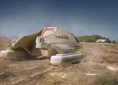
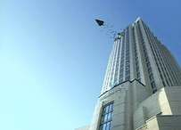
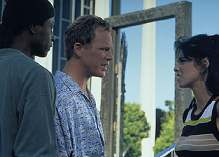
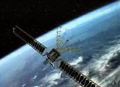
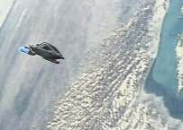
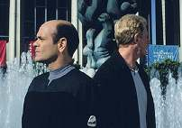
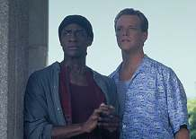
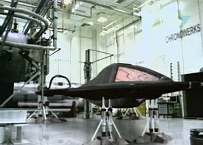
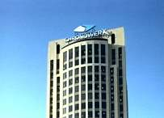

|
MANCHETE
DO EPISDIO
Depois de "frias" na Terra, tripulao
brinda a volta ao quadrante Delta
Episdio
anterior | Prximo
episdio
Sinopse:
Data
Estelar: desconhecida.
As
tentativas de Janeway em teletransportar Henry Starling e a nave
temporal falham quando os transportes de longo alcance da Voyager
param de funcionar. Como plano alternativo, a astrnoma Rain
Robinson o atrai para um encontro no qual a tripulao espera
captur-lo. Starling aparece com o Doutor, agora equipado com um
dispositivo do sculo 29 que o permite existir em ambientes sem os
emissores hologrficos convencionais.
Aps terem reconfigurado os defletores de uma
nave auxiliar para ocult-la dos radares do sculo 20, Chakotay e
Torres tentam transportar Starling. Mas o empresrio usa um
aparelho que interfere no processo. 
A Voyager consegue redirecionar o sinal para materializ-lo, mas a
disrupo danifica os controles da nave auxiliar seriamente.
Chakotay e Torres fazem um pouso forado no deserto e so feitos
refns por um grupo paramilitar. A capit consegue triangular o
local da queda no Arizona e manda o Doutor e Tuvok tentarem
localiz-los.
Na Voyager, Starling admite que quer viajar ao
futuro para roubar mais tecnologia. Embora Janeway acredite ter
posto um fim aos planos dele, o seu capanga na superfcie consegue
transport-lo  de
volta ao escritrio em Los Angeles. Do lado de fora do prdio, Paris
avista um caminho que aparenta estar movendo a nave temporal para
outro lugar. No Arizona, Tuvok e o Doutor conseguem libertar
Chakotay e Torres. Torres repara a nave auxiliar, que eles usam para
localizar o caminho e destru-lo. Contudo, eles descobrem que o
caminho era uma isca falsa; a nave temporal estava no escritrio
de Starling, e ele acaba de lan-la.
Recolhendo
Paris e Tuvok, a nave auxiliar volta Voyager, onde Janeway
abre contato com Starling, que se recusa a abandonar a misso. Ela
no encontra alternativas, seno destruir a Aeon. Segundos depois,
uma fenda espacial abre e Braxton aparece em
sua nave temporal. Com a sua linha temporal anterior alterada pela
destruio de Starling, este Braxton
veio do futuro para levar a Voyager de volta ao
sculo 24, de onde nunca deveria ter sado. Janeway pede a Braxton
que os deixem na Terra, mas Braxton cita a Primeira Diretriz
Temporal, sobre a qual a capit no discute. De volta ao quadrante
Delta, a tripulao desfruta da nica vantagem dessa jornada: o
Doutor ficou com a tecnologia do sculo 29, o holo-emissor porttil
que finalmente o libertou de seu confinamento na enfermaria.
Comentrios:
 Embora
o episdio no tenha sido to interessante quanto a primeira
parte --o que acontece com freqncia nos duplos de Jornada--,
"Future's End, Part II" foi uma concluso adequada
histria apresentada na semana anterior. A qualidade do roteiro
foi quase to boa, apesar de este trazer uma srie de inconsistncias.
Parece que os personagens que mais
brilharam na primeira parte desta vez ficaram em segundo plano, e
vice-versa. Rain Robinson, por exemplo, foi um dos pontos altos esta
semana, enquanto o capito Braxton sequer apareceu (a referncia
aqui ao velho mendigo das ruas de Los Angeles) e, diga-se de
passagem, o telespectador nem tem como saber o que se fez dele. Nem
a Voyager, nem a Aeon, o resgataram. Infere-se que ele ficou preso
no sculo 20.
 Fazendo
uma pausa na anlise dos personagens, vale a pena insistir um pouco
nesse ponto, que um dos maiores buracos no roteiro. Se a verso
jovem de Braxton apareceu ao final da histria para retornar a
Voyager ao quadrante Delta, afirmando ter detectado uma anomalia
sobre a Terra do sculo 20, como que ningum no sculo 29
detectou a queda da Aeon em 1967, corrigindo essa anomalia em
primeiro lugar?
Enfim, voltando aos personagens,
outro que brilhou foi o Doutor. Alis, no se podia esperar menos
dele --ou de Robert Picardo. Houve humor, sarcasmo e uma importante
adio ao personagem: o emissor hologrfico porttil. Ao
introduzirem o aparelho, os produtores finalmente se tocavam que o
Doc era o personagem mais popular e carismtico de Voyager.
Engraado, pois a idia inicial era deix-lo como um secundrio.
Mas tambm, tudo nessa srie inesperado. Nos episdios que se
seguem, ser possvel v-lo andando pelos corredores da nave e at
se transportando para fora dela.
 As
cenas envolvendo o Doutor e Starling, e Starling e Janeway,
estiveram entre as melhores. Isso por causa da dramaticidade que
passaram. Foram interessantes principalmente o trecho em que
Starling mostra ao Doc o que a dor, derrubando a atitude sarcstica
e a falsa sensao de invulnerabilidade dele --algo que ningum
na USS Voyager tinha conseguido fazer-- e aquele em que a capit
tenta argumentar com o dono de um imprio capitalista sobre os
prejuzos que suas aes podem causar s vidas de pessoas, nove
sculos no futuro.
A trama secundria envolvendo
Chakotay e B'Elanna foi meio sem p nem cabea. Realmente no
acrescentou nada construo da srie. Sua nica relevncia
foi a conversa que os dois tiveram a bordo da nave auxiliar. Eles
comearam a especular, em tom irnico, o que aconteceria
tripulao se ficassem presos no sculo 20, uma possibilidade que
at ento ningum tinha mencionado.
 Falando
em naves auxiliares, surge outra dvida: porque Harry Kim no
enviou uma delas resgatar a capit e o comandante no final da
primeira parte. Com certeza as cmeras de vdeo no a teriam
identificado como um OVNI. E, sinceramente, como que no passou
pela cabea deles que uma nave auxiliar praticamente invisvel,
se comparada a um monstro de 15 decks, todo iluminado?! Mas tudo
bem... o pblico teria ficado sem a simblica imagem da Voyager
cruzando os cus da Terra --este deve ter sido o raciocnio dos
roteiristas.
 Em
"Future's End, Part II" novamente levantado o
questionamento sobre as percias tcnicas de Starling. Ou o homem
superdotado --o que dificulta a explicao sobre o fato de, nos
anos 60, ele ter sido um hippie bbado--, ou estudou e muito os
manuais de pilotagem e operao de naves estelares. Chega a ser
engraado o modo como se esquiva com tanta facilidade da tripulao
de Voyager, e como lida com a tecnologia do sculo 29. Nem os
oficiais das sries de Jornada so to rpidos no gatilho quanto
Starling. claro que tambm no se pode esquecer de citar o
capanga dele, que tambm conhece os sistemas da Aeon. Do jeito que
os caras so raposas, de se espantar que os roteiristas no
cogitaram que a prpria Voyager fosse alvo de Starling. Sim, porque
seu banco de dados lhe seria til por dcadas.
 Vamos
a outra inconsistncia que no deve ter passado pela cabea de
muitos. Como que Tuvok e o Doutor chegaram ao Arizona em tempo
menor do que aquele que Paris e Robinson levaram para cruzar Los
Angeles? Afinal, eles no foram transportados, ou pelo menos nada
foi dito a respeito.
Sobre Janeway, em primeiro lugar
ficou muito mais jovial com o novo penteado. E ela tambm est
visivelmente mais solta e acessvel. Mas, quanto sua conduta,
com que direito ela pode criticar o fato de Starling roubar
tecnologia do futuro, quando a ela mantm a tecnologia dada ao
Doutor? E como que ela, como capit da Frota, poderia ter ficado
surpresa quando Braxton citou a Primeira Diretriz Temporal? Ela
acreditou mesmo que a Voyager poderia ter ficado na Terra?
No final, a nossa intrpida nave est
de volta ao quadrante Delta, no momento exato em que encontrou
Braxton pela primeira vez. o chamado "episdio-reset".
Mas, de fato, as coisas no mudaram muito, mudaram? O estrago foi
feito no sculo 20. Rain Robinson  tem
uma bela noo do futuro (no vamos subestimar sua inteligncia),
o velho Braxton supostamente ainda est em L.A. e s Deus sabe o
que aconteceu com a Chronowerks, a empresa de Starling. O fato de
ele ter desaparecido, e seu prdio ter um enorme rombo na estrutura
(falo sobre a seqncia de lanamento) no deve ter passado
desapercebido pela imprensa. Some a isso as imagens da Voyager
sobrevoando a cidade.
S h mais alguns comentrios a
fazer. Os feitos da Voyager so conhecidos no sculo 29. Ento,
teoricamente, seria razovel a tripulao achar que ainda teria
alguma coisa importante a fazer no quadrante Delta e que
eventualmente chegaria em casa, j que a Frota sabe de suas
viagens.
 Jeri
Taylor, produtora da srie, disse que a equipe comearia a
"abraar mais a aventura" nesta temporada. O episdio
comprova isso. No fim, a tripulao brinda o retorno ao quadrante
Delta. Jeri
Taylor, produtora da srie, disse que a equipe comearia a
"abraar mais a aventura" nesta temporada. O episdio
comprova isso. No fim, a tripulao brinda o retorno ao quadrante
Delta.
Em um apanhado geral, a histria deu
certo. Embora no tenha seguido a linha da primeira parte --talvez
porque teve uma outra pessoa na direo--, trouxe desenvolvimentos
importantes e potenciais, sobretudo a nova mobilidade do Doutor.
Citaes:
Tuvok - "Would you pass me a burrito?"
("Voc poderia me passar um burrito?")
Paris - "These things are
kinda... crude."
("Essas coisas so meio... cruas.")
Starling - "Your program...
really isn't very sophisticated."
("O seu programa... realmente no muito
sofisticado.")
Doutor - "That is a matter of opinion."
(" uma questo de opinies.")
Doutor - "If my History is
accurate, southern California in the late 20th century had no
shortage of psychotherapists, competent and otherwise. I suggest you
look for one."
("Se minha Histria est precisa, o sul da Califrnia no
final do sculo 20 no tinha escassez de psicoterapeutas,
competentes ou no. Eu sugiro que voc procure um.")
Chakotay - "I could win a
Nobel Prize."
("Eu poderia ganhar um Prmio Nobel.")
Seqestrador - "This one
lookes Indian. But that one... I don't know what her story is."
("Este parece ndio. Mas aquela ali... eu no sei qual
a histria dela.")
Janeway - "Welcome, to the
24th century. I took the precaution of removing your tricorder. That's
what it's called, by the way."
("Bem-vindo ao sculo 24. Por precauo eu removi o seu
tricorder. A propsito esse o nome dele.")
Starling - "What are you
going to do? Shoot me?"
("O que voc vai fazer? Atirar em mim?")
Janeway - "The thought has crossed my mind."
("O pensamento passou pela minha cabea.")
Rain - "Let's recap. UFO in
orbit, laser pistols, people...vanishing. I've seen every episode of
Mission Impossible and you are not secret agents."
("Vamos recapitular. OVNI em rbita, pistolas laser,
pessoas... desaparecendo. Eu assisti a todos episdios de Misso
Impossvel e vocs no so agentes secretos.")
Trivia:
 Este episdio tem um pequeno blooper. Em uma cena, o Doutor sai do
carro, deixando a porta de trs aberta. Na tomada seguinte, ela est
fechada.
Este episdio tem um pequeno blooper. Em uma cena, o Doutor sai do
carro, deixando a porta de trs aberta. Na tomada seguinte, ela est
fechada.
O caminho explodindo mostrou o poder das novas tcnicas de
efeitos especiais de Voyager. Embora a imagem seja gerada por
computador (CGI), extremamente realista.
Ao final do episdio, o Doutor hologrfico finalmente adquire um
sistema derivado de tecnologia do sculo 29, que permite que ele
ande livremente por qualquer ambiente.
No episdio fica estabelecido que Chakotay treinou como piloto na
Amrica do Norte, no primeiro ano da Academia. Depois foi para Vnus
para aprender a lidar com tempestades atmosfricas, e mais tarde
estudou asterides no Cinturo.
Ficha
tcnica:
Direo de Cliff Bole
Histria de Brannon Braga & Joe Menosky
Exibido em 13/11/1996
Produo: 053
Elenco:
Kate Mulgrew como
Kathryn Janeway
Robert Beltran como Chakotay
Roxann Biggs-Dawson como B'Elanna Torres
Robert Duncan McNeill como Tom Paris
Jennifer Lien como Kes
Ethan Phillips como Neelix
Robert Picardo como Doutor
Tim Russ como Tuvok
Garrett Wang como Harry Kim
Elenco convidado:
Sarah Silverman como Rain Robinson
Allan Royal como capito Braxton
Ed Begley, Jr. como Henry Starling
Brent Hinkley como Butch
Clayton Murray como Porter
Episdio
anterior | Prximo
episdio
|